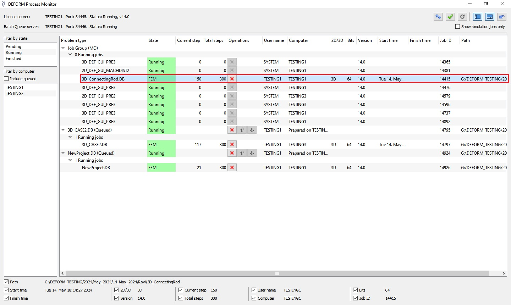
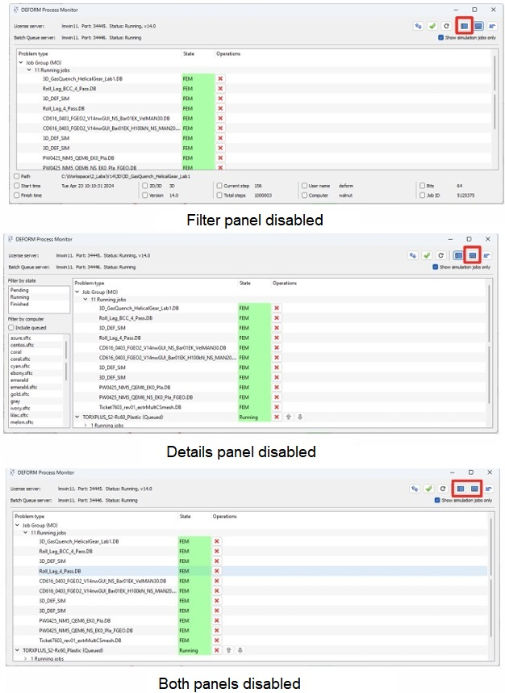
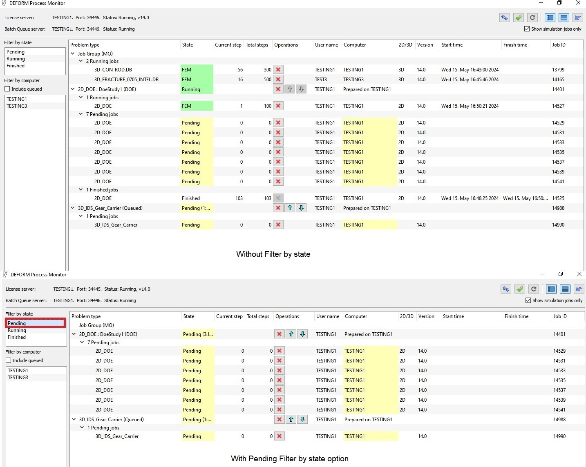
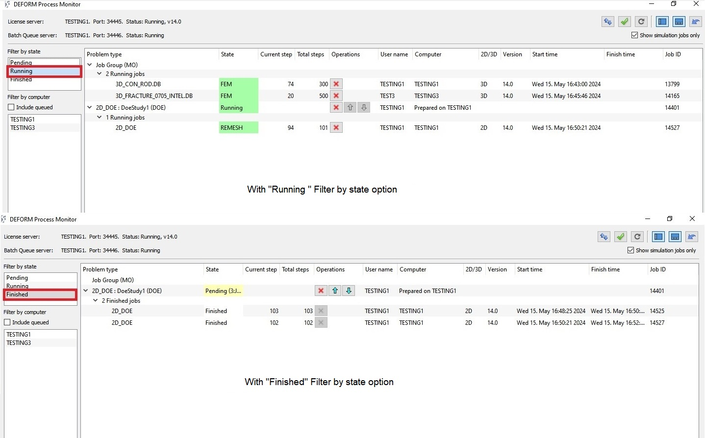
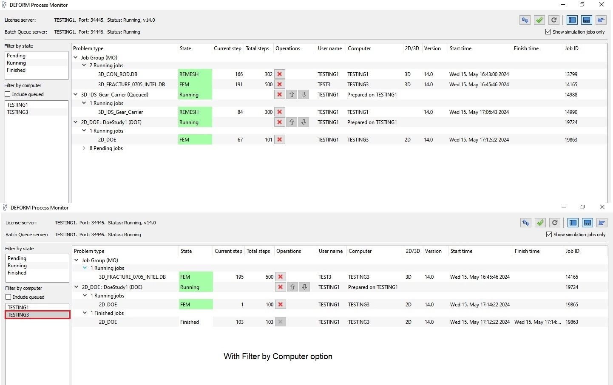
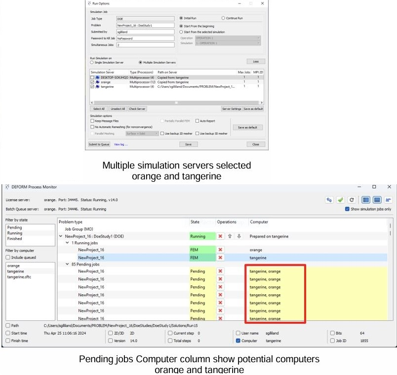
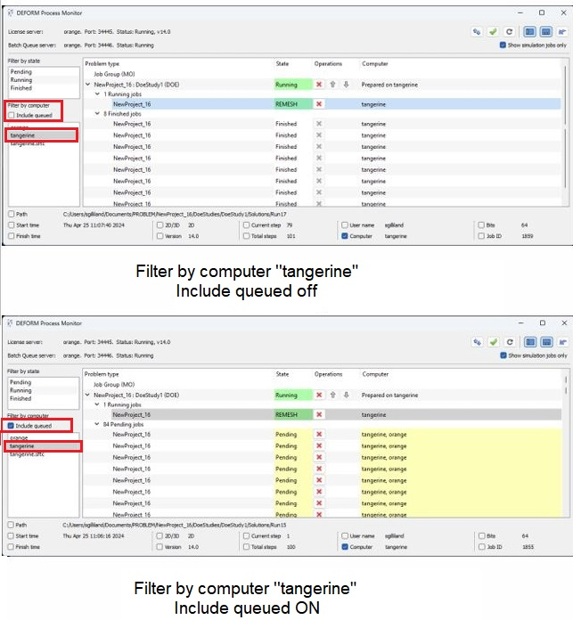
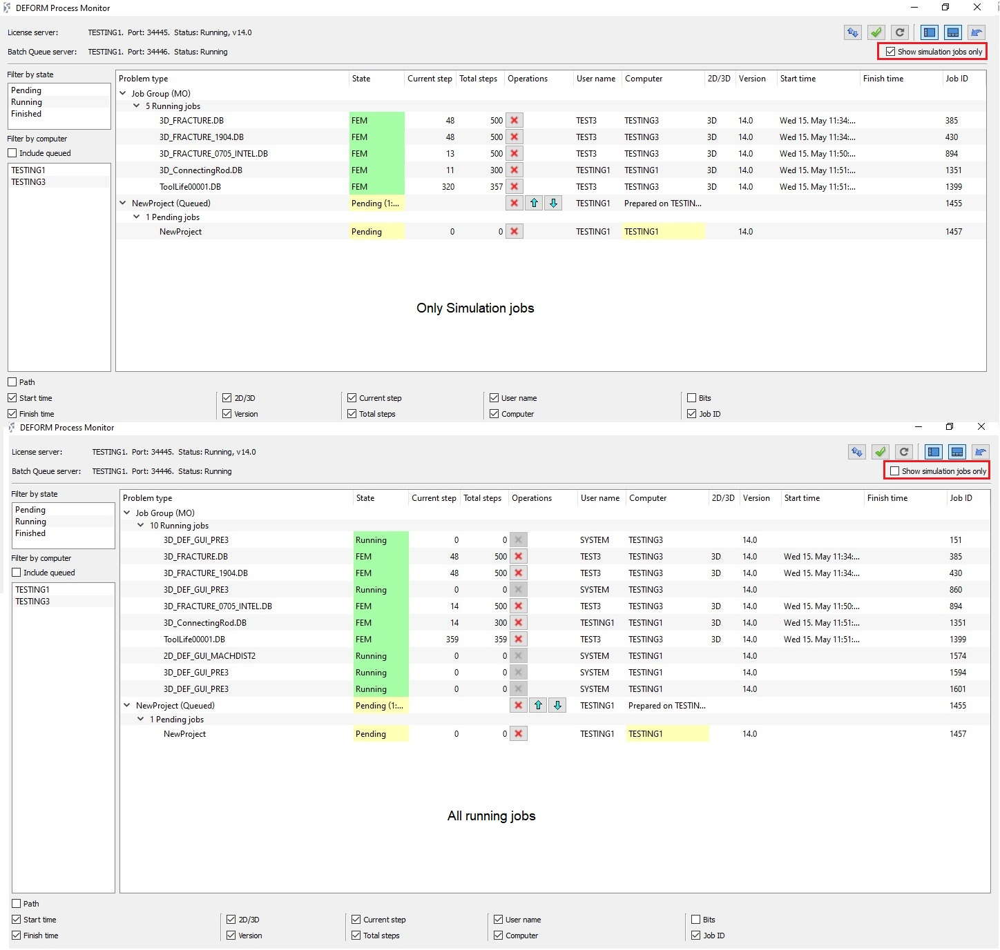
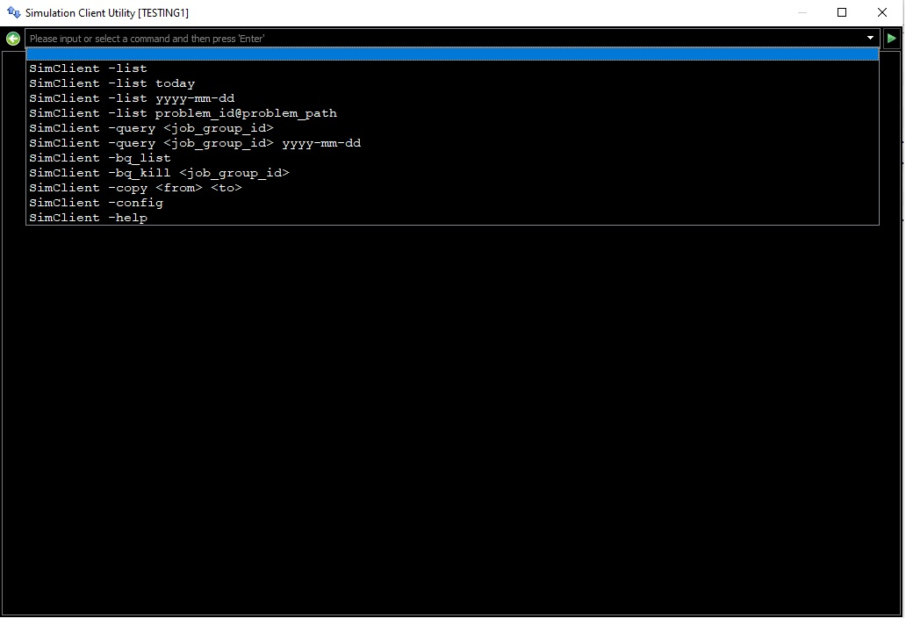

23.4.1. Detail Information Panel
23.4.4. Other options in Process Monitor
23.4.5. Simulation Client Utility

Process monitor status for running job
The process monitor displays the status of any simulations running on the CPU. The process monitor table will be updated when any of the licensed modules are running (either DEF_AMG or other such processes). The Process Monitor obtains information from License Manager Server to determine simulations or product status from all the systems connected to the same License Manager and displays the respective information of the selected DB or product in different columns like,
Problem type - Problem type information shows the name of the DB or Product that is currently in use.
State - Status of the DB/ Product.
Current step – Current simulating step of the respective DB.
Total steps – Total number of simulation step assigned in the DB.
Operations – Option to Terminate and prioritize the jobs in queue by moving them up or down .
User name – Name of the user who submitted the DB or using the Product.
Computer – Machine on which respective DB is running or Product is in use.
2D/3D – Geometry model type within the DB at current simulating step (2D or 3D).
Bits – FEM running type 32/64 bit.
Version – Deform version used to generate the DB.
Start time – Time and date at which the simulation is started.
Finish time – Time and date at which the simulation is finished.
Job ID – Job ID assigned for DB/Product.
Path – Displays the path at which the DB is located.
The amount of the detail information to be displayed can be controlled by filtering the information based on the system or status. The columns can be turned on/off using checkboxes in the Detail panel.
The details panel has checkboxes to control the display of the columns within the Job Information List. The Show/Hide Details panel button is used to show or hide the Details panel, available on the bottom of the window, as shown in Fig. 23.4.2. The details panel shows the details of the job selected in the Job information list. Also in the details panel, there are check boxes to turn on or off the display of the following columns: Path, Start time, Finish time, 2D/3D, Version, Current step, Total steps, User name, Computer, Bits and Job ID.

Process monitor with disabling panels
Reset column settings: This button will reset the state of all the checkboxes in the Detail panel to their default settings. By default, all checkboxes
except for Path and Bits are checked.
The filter panel is used to filter what jobs are displayed in the Job information list. Filtering applies to either the running state of the job or the computer it’s running on. The Show/Hide Filter panel button is used to show or hide the Filter panel (See Fig. 23.4.2.).
Filter by Sate
The “Filter by State” option allows for filtering of jobs by their running state. The states are “Pending”, “Running” and “Finished”. Options are toggled on or off by clicking on the state. The results will be shown in the Job Information List as shown in Fig. 23.4.3. Note that the “Finished” state only applies to jobs that are in a group, such as DOE jobs.


Process monitor Filter by state options
Filter by Computer
The “Filter by Computer” option shows all the computers names that are connected to the same License Manager and are running any of the licensed modules (FEM or UI license checked out). Computers can be toggled on or off by clicking on the computer in the list. The results will be shown in the Job Information List as shown in Fig. 23.4.4.

Process monitor Filter by computer option
When batch jobs are sent to multiple simulation servers, they aren’t assigned a computer until they start running. In the Computer column, these pending jobs show the computers that they could potentially run on as shown in Fig. 23.4.5. The “include queued” checkbox allows for these jobs to be included in the computer filter as shown in Fig. 23.4.6.

Queued DOE job using Multiple simulation server

Filter by computer without Include queued and with Include queue option
Terminate or Remove completely: This will “Terminate” the selected DB simulation instantly. Any calculations at the current step will be lost.
Show simulation jobs only: Checking this checkbox will display the information related to only DBs that are simulating and pending, information related to the products/modules that are currently will not be shown, see Fig. 23.4.7.

Process monitor status with and without show simulation jobs only selection.
Check dead clients and take back license: Clicking this icon will check if they are any client’s jobs licenses that are not returned, if not returned then they are retrieved and made available to be used.
Reload job information – Clicking this button will reload the job information from the License monitoring.
Simulation Client Utility can be used to display information related the queued jobs submitted from the respective system, it can be launched by clicking on button from Process monitor.
Using pulldown list we can observe the below options (see Fig. 23.4.8.),
SimClient -list: Lists the active simulation jobs submitted from this client.
SimClient -list today: Lists all the jobs that are submitted today for simulation from this client.
SimClient -list yyyy-mm-dd: Lists all the jobs that are submitted on the given date from this client.
SimClient -list problem_id@problem_path: Displays information of the respective job from this client based on the name and path.
SimClient -query <job_group_id>: It prints out detail information about a simulation job based on the Job group ID.
SimClient -query <job_group_id> yyyy-mm-dd: It prints out detail information about a Job group based on the ID and the date.
SimClient -bq_list: Lists all the simulation jobs from the batch queue server.
SimClient -bq_kill <job_group_id>: Kills the simulation running in batch queue based on the Job group ID.
SimClient -copy <from> <to>: It manually copies the data from a remote simulation server to local server based on the path specified in from and to.
SimClient -config: It displays/modifies Simulation Clients configuration.
SimClient -help: Displays information about available commands and their functions.

Sim Client utility window
Related Topics:
Start, Stop and Resume Simulation